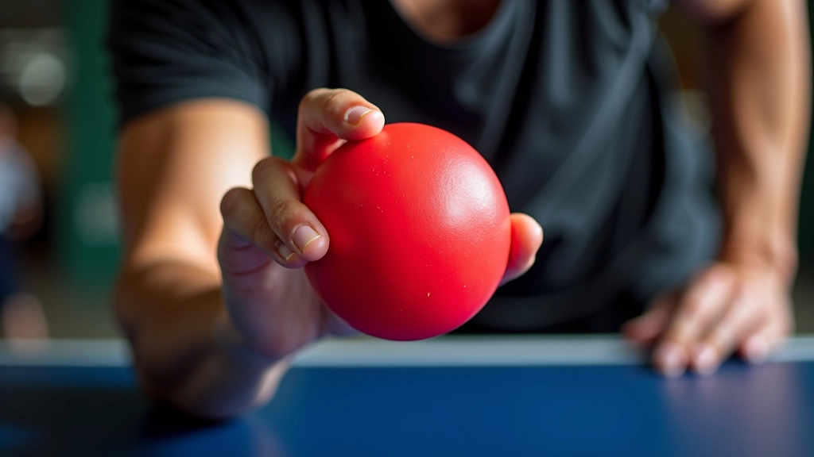
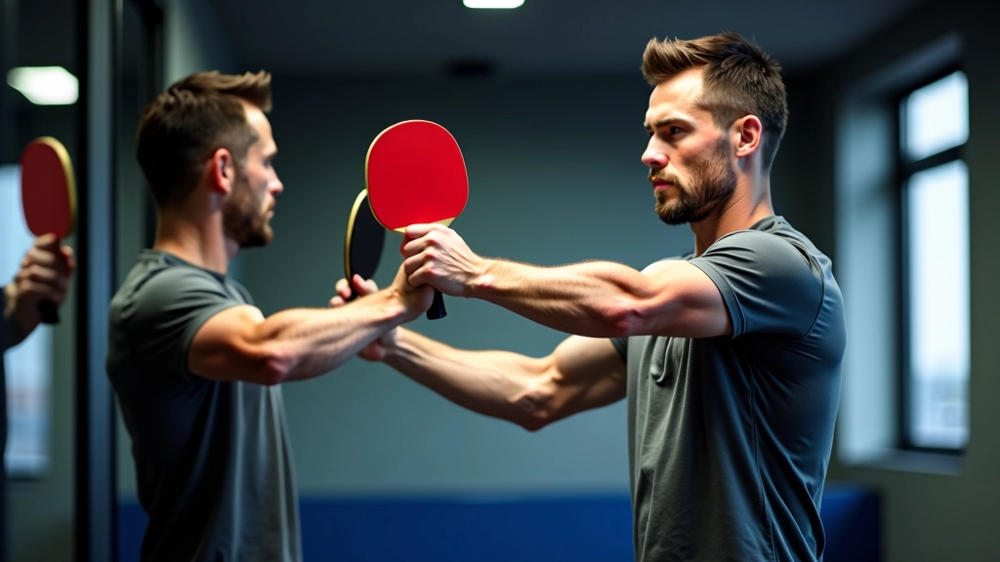
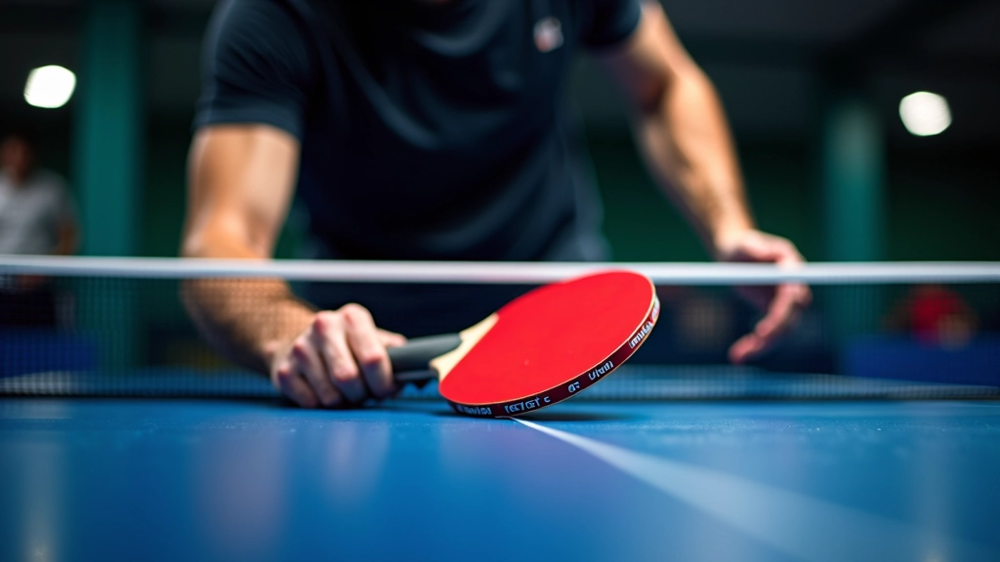
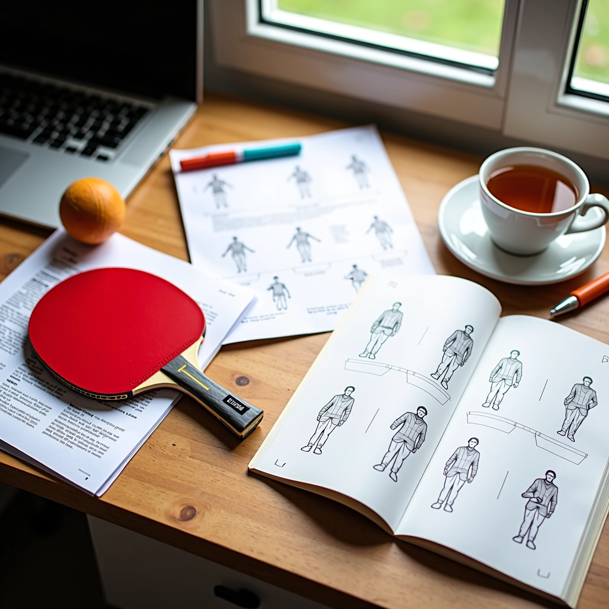

أساسيات قبضة القلم: الخطوات الأولى الصحيحة
تعلم كيفية الإمساك الصحيح بالمضرب وتجنب الأخطاء الشائعة التي يرتكبها المبتدئون في البداية.
تمارين عملية تساعدك على بناء قوة اليد والمعصم وتحسين التحكم بالمضرب أثناء اللعب السريع.
القوة الحقيقية في تنس الطاولة ليست فقط في ذراعك الكبيرة — إنها في يديك. عندما تمسك المضرب بقبضة ضعيفة، ستفقد التحكم في اللحظات الحرجة. المضرب سيتحرك في يدك، والكرات السريعة ستمر بك دون أن تستطيع الرد عليها.
نحن نركز على التمارين التي تقويّ يدك والمعصم والأصابع — وليس فقط حمل الأوزان الثقيلة. هذه تمارين خاصة تستهدف المجموعات العضلية التي تستخدمها فعلاً أثناء اللعب. بعد 4-6 أسابيع من التدريب المنتظم، ستشعر بفارق حقيقي في ثباتك وقوتك.

ابدأ بالأساسيات. استخدم كرة الإجهاد أو جهاز تقوية القبضة — هذه الأدوات بسيطة لكنها فعالة جداً. امسك الكرة بقوة لمدة 5 ثوان، ثم أرخِ. كرر هذا 15 مرة، 3 مجموعات في اليوم.
المهم هنا أن تشعر بالعضلات تعمل في راحة يدك والمنطقة بين الأصابع. لا تسرع. القوة تُبنى ببطء. إذا استطعت إضافة هذا التمرين إلى روتينك اليومي — حتى 3 دقائق فقط — ستلاحظ نتائج حقيقية بعد 3 أسابيع.

القبضة القوية وحدها ليست كافية — المعصم يجب أن يكون مرناً وقوياً في نفس الوقت. حرك معصمك في دوائر — 10 دورات في كل اتجاه. ثم ارفع معصمك للأعلى والأسفل ببطء، مع ثني أصابعك.
هذا يبدو بسيطاً، لكنه يعد معصمك للحركات السريعة في الملعب. عندما تلعب ضربة قوية أو تدافع عن كرة سريعة، معصمك يحتاج أن يكون جاهزاً. اعمل على هذا 2-3 مرات في الأسبوع. ستشعر أن ضرباتك أكثر استقراراً وأقل إرهاقاً.

الآن أضف مضربك إلى التمرين. أمسك المضرب بالقبضة الصحيحة (قبضة القلم كما تعلمت من الدليل الأول). حاول أن تدير المضرب في دوائر صغيرة — مثل تحريك ملعقة في فنجان. هذا يقوي الأصابع والمعصم معاً.
قم بـ 20 دورة في كل اتجاه، 3 مجموعات. لا تسرع — الهدف هو الشعور بالمقاومة والتحكم. بعد أسبوعين، سيكون إمساكك بالمضرب أكثر ثقة، وستلاحظ أن الكرات السريعة لا تهزك بقدر ما كانت تفعل قبلاً.

لا تفعل هذا التمارين مرة واحدة ثم تتوقف. تدرب 4-5 أيام في الأسبوع، حتى لو كانت جلسات قصيرة. 10-15 دقيقة يومياً أفضل من ساعة واحدة في الأسبوع.
ابدأ بضغط خفيف على جهاز تقوية القبضة. عندما تشعر أنه أصبح سهلاً، انتقل إلى جهاز أقوى. التقدم البطيء يمنع الإصابات ويبني عضلات حقيقية.
لا تنسَ أن تمدد يديك بعد التمرين. افتح أصابعك بقوة، امسك الوضع 10 ثوان. استرخِ. العضلات تنمو أثناء الراحة، وليس أثناء التمرين.
لاحظ كم مرة تستطيع ضغط الكرة أو جهاز التقوية. بعد 4 أسابيع، قارن النتائج. ستندهش من الفارق — هذا دليل حقيقي على أنك تحرز تقدماً.
ستشعر بألم خفيف في اليد والمعصم — هذا طبيعي. تبدأ العضلات في التكيف مع التمارين. استمر ولا تستسلم.
الألم يقل. تبدأ تشعر بقوة فعلية. المضرب يبدو أخف في يدك. تستطيع أن تضغط بقوة أكثر دون إرهاق.
الفارق واضح الآن. ضرباتك أكثر استقراراً. الكرات السريعة لا تهزك. تشعر بثقة أكثر في الملعب.
قوة حقيقية مستقرة. تحسن واضح في أدائك. تلاحظ أنك تسيطر على الكرات التي كانت تتحداك قبلاً.
لا تحتاج إلى معدات غالية الثمن. كرة إجهاد واحدة تكلفك بضعة دولارات. جهاز تقوية القبضة متوفر في أي متجر رياضي. الحقيقة أن معظم لاعبي تنس الطاولة المحترفين يبدأون بنفس التمارين البسيطة التي قرأتها هنا.
الفرق بينهم وبين اللاعبين العاديين؟ الالتزام. هم يمارسون هذه التمارين بانتظام، أسبوعاً تلو الآخر. أنت تستطيع أن تفعل نفس الشيء. ابدأ غداً — أو حتى الآن. 10 دقائق فقط. ستشعر بالفارق.
هذا الدليل معلومات تعليمية عامة حول تمارين تقوية القبضة في تنس الطاولة. إذا كنت تعاني من إصابة يد أو معصم، استشر طبيباً أو معالجاً فيزيائياً قبل البدء بأي برنامج تمارين جديد. كل شخص مختلف، وما يناسب شخصاً قد لا يناسب آخر. هذه التمارين معدّة لتكون آمنة ومفيدة للاعبين الصحيين.

فريق التحرير والمراجعة
كتبه فريق تحرير أكاديمية طنطا، متخصص في تقديم إرشادات عملية وسهلة المتابعة حول إتقان قبضة القلم في تنس الطاولة.
تعلم كيفية الإمساك الصحيح بالمضرب وتجنب الأخطاء الشائعة التي يرتكبها المبتدئون في البداية.

استكشف الفروقات بين الأسلوب الصيني والأسلوب الأوروبي في قبضة القلم واختر ما يناسبك.
اكتشف كيفية استخدام حركات المعصم والأصابع بشكل صحيح لتحسين دقتك والتحكم في السرعة.